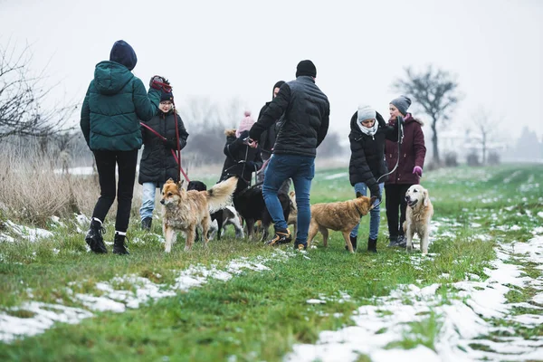

Missão
Resgatar, cuidar e reabilitar cachorros em situação de rua, promovendo o bem-estar animal e incentivando a adoção responsável, com amor e compromisso com a vida..
Somos uma organização dedicada a vida de cães de rua! A ONG Fernando é uma organização dedicada ao resgate, cuidado e reabilitação de cachorros em situação de rua. Nosso objetivo é oferecer uma nova chance a esses animais, garantindo acolhimento, alimentação, cuidados veterinários e, sempre que possível, um lar amoroso por meio da adoção responsável. Trabalhamos com amor, respeito e compromisso para transformar vidas.
Resgatar, cuidar e reabilitar cachorros em situação de rua, promovendo o bem-estar animal e incentivando a adoção responsável, com amor e compromisso com a vida..
Ser referência no resgate e proteção de cães abandonados, contribuindo para um futuro onde todos os animais tenham um lar seguro, digno e cheio de carinho.
Amor e respeito pelos animais: tratamos cada vida com compaixão e dignidade. Responsabilidade: atuamos com ética e compromisso em todas as nossas ações. Adoção consciente: acreditamos que cada adoção transforma duas vidas — a do animal e a do adotante. Educação e conscientização: promovemos o respeito aos animais por meio da informação e do exemplo. Transparência: mantemos uma relação aberta e honesta com nossos apoiadores e comunidade. Trabalho em equipe: unimos forças de voluntários, parceiros e comunidade para fazer a diferença..
Rua do Limoeiro, 123 — São Paulo — SP
Telefone: (11) 99999-9999
Email: contato@ongfernando.org